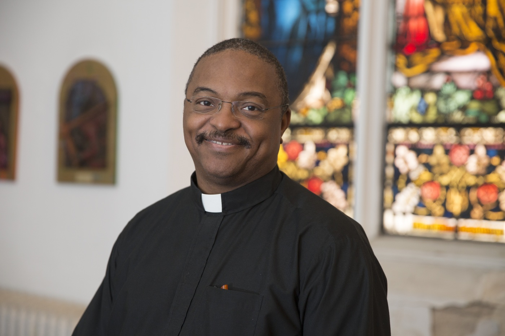

Welcome to the National Shrine of the Divine Mercy
My name is Fr. Anthony Gramlich, MIC, the rector of the National Shrine of The Divine Mercy in Stockbridge, Massachusetts, and a member of the Congregation of the Marian Fathers of the Immaculate Conception. We welcome you to our National Shrine of The Divine Mercy website!
The grounds of the National Shrine consists of 375 acres of land nestled in the beautiful Berkshire hills in western Massachusetts. The name of the property is called “Eden Hill” because of its natural beauty. The Shrine is usually open 365 days a year, including all holidays and holy days.
On this website, pilgrims will find practical information for the Shrine including:
- The Daily Shrine Schedule
- Calendar of Events
- Novenas
- Mass requests
- Bus registrations
- Special events such as Divine Mercy Sunday and Encuentro Latino
- Directions
- Local Lodging
- Contact Information
On the grounds of Eden Hill, please explore the National Shrine chapel itself )The "Shrine Church,") which offers daily Mass, Confessions, Adoration, Rosary, benediction, the Chaplet of Divine Mercy, the blessing of religious articles, and a blessing with a first-class relic of St. Faustina.
Please explore our other shrines on the grounds of Eden Hill as well including: the Mother of Mercy Outdoor Shrine, the Shrine of the Holy Innocents, the outdoor life-size Stations of the Cross, the Holy Family Shrine, and the Lourdes Grotto/Immaculate Conception Candle Shrine.
Most of our outdoor shrines are also candle shrines, which give pilgrims an opportunity to light a real candle for a loved one. There is also an opportunity to have a candle lit in the sanctuary of the National Shrine by requesting it online. Eden Hill is also the home to the Marian Helpers Center, which includes a small, beautiful oratory and indoor candle shrine.
We have created a plethora of memorial opportunities here on Eden Hill. Our memorials include:
- The Pillars of the Shrine (located below the National Shrine of the Divine Mercy Church in Memorial Hall)
- The Holy Family Shrine (for families)
- The Mother of Mercy Outdoor Shrine
- The Mother of Mercy Outdoor Shrine
- The Shrine of the Holy Innocents (for deceased children)
- The Immaculate Conception Candle Shrine (for the deceased)
- The Divine Mercy Mural
- The Shrine Hymnals
We invite you to visit the Shrine and experience the mercy of God for yourself!
Yours in Jesus and Mary Immaculate,
Fr. Anthony Gramlich, MIC
Rector
National Shrine of The Divine Mercy
Shrine Schedule
Please Click Here to see the Shrine Schedule